| SOURCE | TITLE| IMAGE MATCH | click to source page |
| eBay | Netherlands - 1963 - 10C - New Daily Stamps - #18126 | eBay | 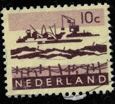 |
| vividagallery.com | Netherlands Industrial Cranes Infrastructure Barbed Wire Postwar Economy Monochrome Jigsaw Puzzle by Vivida Gallery - Vivida Gallery | 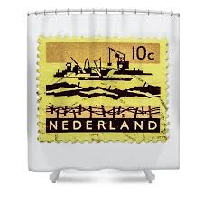 |
| eBay | Netherlands Scott # 403 - 1963 - ' Dredging in Delta ' | eBay | 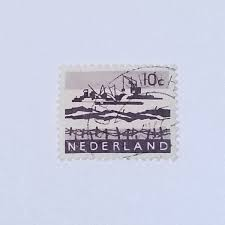 |
| Todocolección | holanda, valor facial 1 gulden - te betalen por - Buy Antique stamps of Netherlands on todocoleccion | 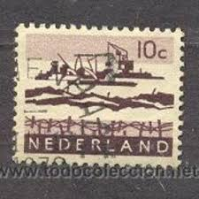 |
| New stamps posted today at www.NoernbergStamps.com . #philately #stampcollecting #noernbergstamps | 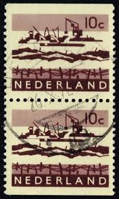 | |
| Alamy | Netherlands Postage Stamp - Delta Works Stock Photo - Alamy | 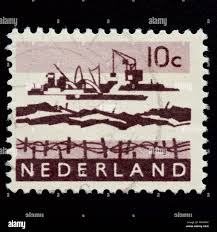 |
| ebid.net | Netherlands stamps 1963 - SG 938 - Dredging in delta 10c deep purple MWG on eBid United States | 160290481 | 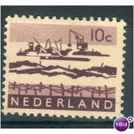 |
| Zegelstekoop | Combinaties postzegels | 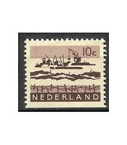 |
| Dreamstime.com | Industry, Ship and Crane, Aspects of Malta Serie, Circa 1973 Editorial Stock Photo - Image of aspects, antique: 104107728 | 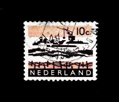 |
| Osta | Holland 1963, maastikud, ehitustööd. (247351290) - Osta.ee | 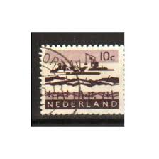 |
| eBay | Netherlands 403a booklet,MNH.Michel 800 D/Dx MH. Dredging in Delta,1966. | eBay | 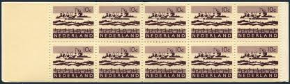 |
| Todocolección | holanda 10 c. dragar año 1963. - Buy Antique stamps of Netherlands on todocoleccion | 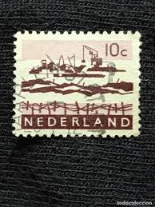 |
| Shutterstock | Karnal Haryana India -july 1st 2022-closeup Stock Photo 2174261967 | Shutterstock | 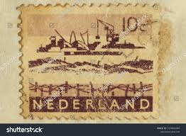 |
| kitantik | Hollanda Pulu - Nederland Stamp - Mektup Zarfından Kesilmiş / Postadan Geçmiş Pul Filateli - Damgalı - Hollanda Pulu, 10 PARA - YABANCI PULLAR - NOSTALJİK DOĞUM GÜNÜ HEDİYESİ - Efemera - kitantik | #16802412010040 | 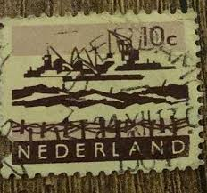 |
| Pngtree | Picture From The 1970s Background Images, HD Pictures and Wallpaper For Free Download | Pngtree | 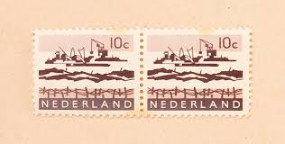 |
| vividagallery.com | Netherlands Industrial Cranes Infrastructure Barbed Wire Postwar Economy Monochrome Greeting Card by Vivida Gallery | 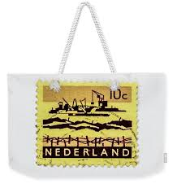 |
| Dreamstime.com | NIEDERLÄNDISCHE 1970: Ein Stempel, Der in Den Niederlanden Gedruckt Wird, Zeigt Den Prins Bernhard Fonds, Circa 1970 Redaktionelles Bild - Bild von mittel, umschlag: 146924150 | 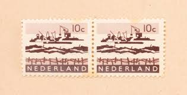 |
| Todocolección | holanda 10 c. dragar año 1963. - Acheter Timbres anciens des Pays-Bas sur todocoleccion | 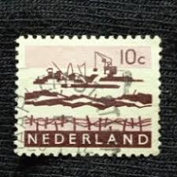 |
| Alamy | Old stamps holland hi-res stock photography and images - Page 2 - Alamy | 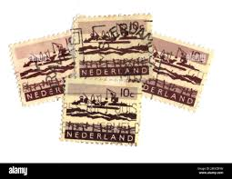 |
| vividagallery.com | Netherlands Industrial Cranes Infrastructure Barbed Wire Postwar Economy Monochrome Throw Pillow by Vivida Gallery - Vivida Gallery | 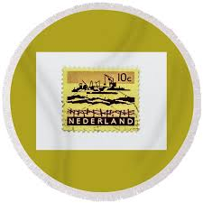 |
| eBay | Netherlands A52 used 1963 6v Ships | eBay | 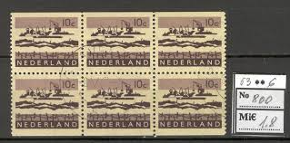 |
| Todocolección | nederland - 30 c - reina juliana - año 1953 - Buy Antique stamps of Netherlands on todocoleccion | 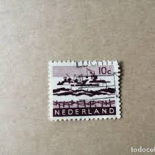 |
| eBay | Netherlands - 1934 Curacao Jubilee | eBay | 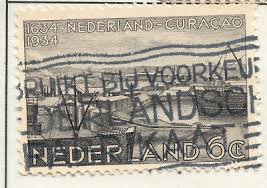 |
| eBay | Netherlands Scott # 403A Complete Booklet Mint Never Hinged | eBay | 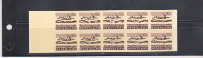 |
| ebid.net | Netherlands 1959 - 12c + 9 bluish green - Charity Stamp - unused on eBid United States | 205152681 | 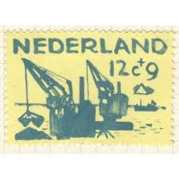 |
| Dreamstime.com | Liberation 1944-1945, Anniversary Serie, Circa 2004 Editorial Stock Image - Image of envelope, heritage: 128667099 | 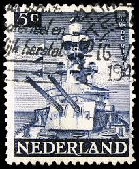 |
| eBay | NETHERLANDS - REMBRANDT - #B43 - USED - YR 1930 | eBay | 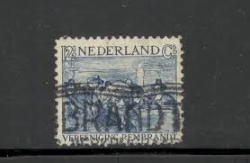 |
| Frimærkebutikken | Delta værket sæt 1986 Netherlands 1302 03 Stamp mint NH ** | 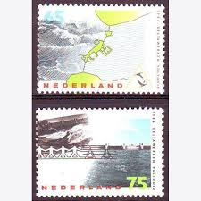 |
| Amazon.com | Amazon.com: Netherlands 1305-1306 (Complete.Issue.) unmounted Mint/Never hinged ** MNH 1986 Sturmflutwehr (Stamps for Collectors) : Toys & Games | 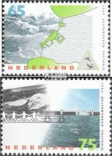 |
| Wikipedia | Aart van Dobbenburgh - Wikipedia | 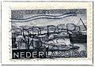 |
| PicClick UK | NETHERLANDS 1944-46 - Liberation stamps - mint hinged except 22.5ct £4.33 - PicClick UK | 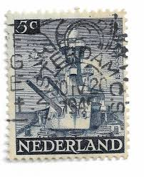 |
| Amazon.com | Amazon.com: Netherlands 1270-1273 (Complete.Issue.) unmounted Mint/Never hinged ** MNH 1985 40. Anniversary The Liberation (Stamps for Collectors) Military/Knight : Toys & Games | 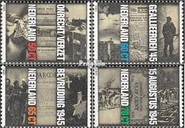 |
| eBay | TAAF/FSAT Ship & Boat Postal Stamps for sale | eBay | 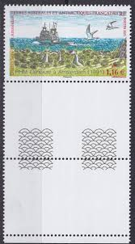 |
| YouTube | Stamps auction - YouTube | 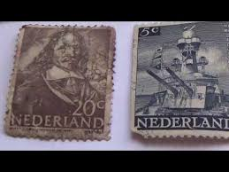 |
| Creazilla | 50+ Free Curaçao Artworks | 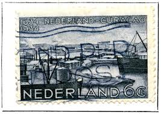 |
| Alamy | NETHERLANDS - CIRCA 1952: a stamp printed in the Netherlands shows Mail Delivery 1852, Centenary of Dutch Postage Stamps, circa 1952 Stock Photo - Alamy | 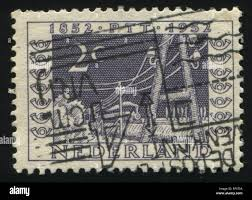 |
| Catawiki | Netherlands 2024 - Complete set of 24-karat gold stamps, 75 years since the end of the Second World War. - auction online Catawiki | 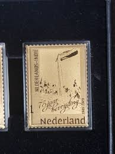 |
| Shopee Malaysia | STM 438-A] Vintage (MINT) Stamp/setem Collection | Shopee Malaysia | 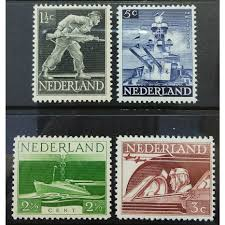 |
| Stamp collectors | 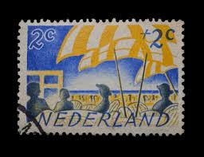 | |
| Alamy | NETHERLANDS - CIRCA 1944: a stamp printed in the Netherlands shows S. S. Nieuw Amsterdam, Transatlantic Liner, circa 1944 Stock Photo - Alamy | 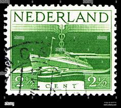 |
| Does anyone have expertise in Nederland stamps? Please dm me! | 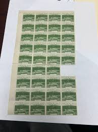 | |
| eBay | SCOTT #403A BOOKLET 1962-66 NETHERLANDS BOOKLET/PANE/STAMPS MNH | eBay | 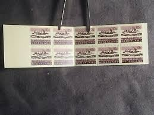 |
| Straw.Page | paulpotitoplace's strawpage | 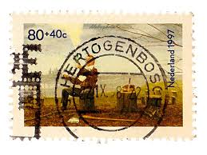 |
| eBay | Netherlands 1934 year, used stamps ,Mi 274-75 | eBay | 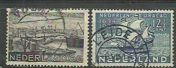 |
| allnumis.com | 3 Cent 1944 - Liberation, Aircraft and other flying objects - Netherlands - Stamp - 9772 | 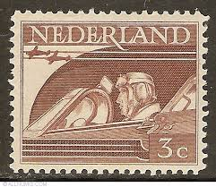 |
| Maps on Stamps | Maps on Stamps : Netherlands | A Database of Cartophilately | 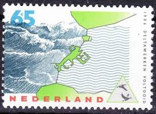 |
| iStock | Commemorative Stamp Issued In 1934 Stock Photo - Download Image Now - 1934, Black Background, Collection - iStock | 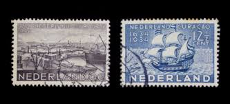 |
| eBay | NETHERLANDS 1986 year , mint stamps MNH (**) | eBay | 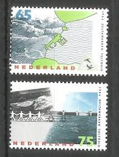 |
| eBay | Netherlands F26 Set 5v 1959 Industry Agriculture Construction CV 13 eur | eBay | 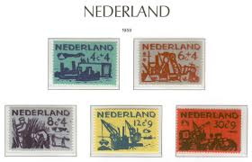 |
| eBay | Niederlande Netherlands 559/63 1951 Zum Wohle Der Kinder MNH | eBay | 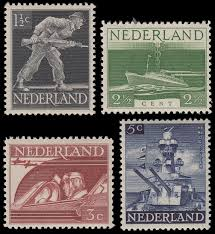 |
| eBay | Netherlands Stamp 4 Sets Scott #927-930, 936-938, 939-940, 943-946 Unused Lot 1 | eBay | |
| eBay | Netherlands Issue 1959 (722-726) Mint never Hinged | eBay | |
| Alamy | Old rhine river map hi-res stock photography and images - Alamy | |
| eBay | NETHERLANDS 1930 Mint LH/MH Complete Set of 3 Stamps NVPH #229-231 CV €30 | eBay | |
| eBay | Netherlands #B42 used (SCV=$3.50) | eBay | |
| postbeeld.com | Stamp 1930, Netherlands Rembrandt 3v, 1930 - Collecting Stamps - PostBeeld - Online Stamp Shop - Collecting | |
| eBay | Netherlands Stamps # B41-3 MLH VF | eBay | |
| eBay | 1966 NETHERLANDS NEDERLAND AUTOMAATBOEKJE PB5 BOOKLET CARNET VF MNH | eBay | |
| eBay | NETHERLANDS OLD STAMPS 1957 - The 350th Anniv. of the Birth of Reuter - USED | eBay |